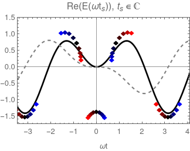
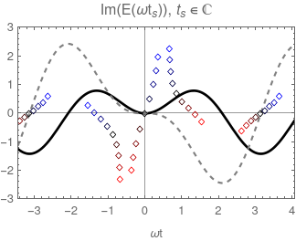
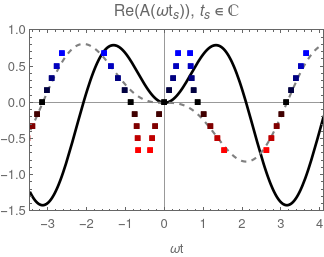
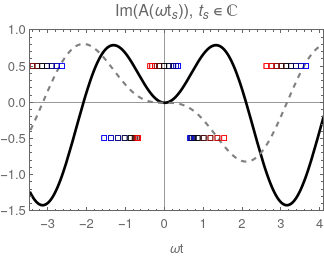

Welcome 🎉
This page contains some additional figures regarding the tunnelling without a barrier, which I present(ed) at various conferences in summer 2023.
All of the figures are for a two-colour with equal amplitude of ω and 2ω, which is where this peculiar event is happening.
Figures 1) The electric field
Fig. 1a) The real part of the electric field for complex-valued times (i.e. the true saddle points)
The diamonds are coloured according to momentum (p=+3 red, p=-3 blue).
Black thick line: electric field for real time.
Grey dashed line: potential for real time.

Fig. 1b) The imaginary part of electric field for complex-valued times (i.e. the true saddle points)
The diamonds are coloured according to momentum (p=+3 red, p=-3 blue).
Black thick line: electric field for real time.
Grey dashed line: potential for real time.

Figures 2) The vector potential
Fig. 2a) The real part of the vector potential for complex-valued times (i.e. the true saddle points)
The squares are coloured according to momentum (p=+3 red, p=-3 blue).
Black thick line: electric field for real time.
Grey dashed line: potential for real time.

Fig. 2b) The imaginary part of vector potential for complex-valued times (i.e. the true saddle points)
The squares are coloured according to momentum (p=+3 red, p=-3 blue).
Black thick line: electric field for real time.
Grey dashed line: potential for real time.
